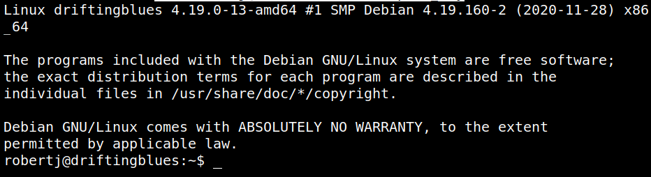

5.4 Login via SSH (First flag)
1. In the “/home/<user>/.ssh” directory on your Kali Machine run the following command.
$ssh robertj@192.168.12.43 -i priv_key
Output:

2. Show the flag.
robertj@driftingblues:~$ls
robertj@driftingblues:~$cat user.txt
robertj@driftingblues:~$cat user.txt
Output: